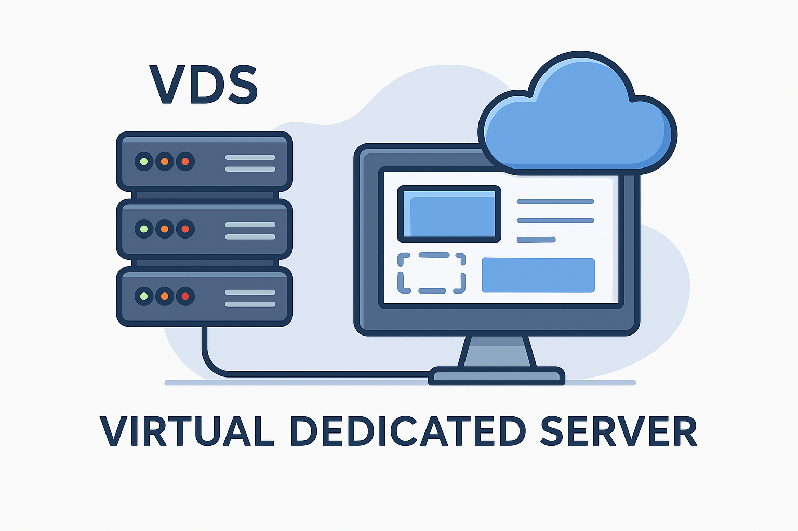

The real answer based on modern virtualization, not marketing terminology.
No — in 2026 there is no technical difference between VPS and VDS. Both terms describe virtual machines created using full virtualization, most commonly KVM.
In the past, VPS often referred to container-based virtualization, while VDS was associated with full virtualization. This distinction no longer applies to modern hosting environments.
Today, both VPS and VDS hosting are based on the same technologies:
| Myth | Reality |
|---|---|
| VDS has dedicated hardware | Both run on shared physical servers with isolated resources. |
| VDS is always faster | Performance depends on CPU policy and storage, not naming. |
| VPS is less secure | Security depends on configuration, not terminology. |
No. Despite the name, a VDS server is not a dedicated server. VDS hosting still uses shared physical hardware, with isolation provided by virtualization. The term “dedicated” in VDS refers to resource allocation, not physical ownership.
The providers below are listed based on common real-world usage scenarios rather than promotional claims.
| Provider | Description |
|---|---|
|
THE.Hosting 🔗 Official site · 🔍 Review & customer opinions |
VPS for €1/month (vCore x1, 1 GB ECC RAM, 15 GB NVMe) available in 50+ locations, ideal for low-cost global projects. |
|
Zomro 🔗 Official site · 🔍 Review & customer opinions |
Premium Cloud VPS with Free VPS Trial — 3 Days! |
|
is*hosting 🔗 Official site · 🔍 Review & customer opinions |
VPS/VDS (KVM) in 40+ countries with free automatic backups and up to 64 IPv6 addresses per server. |
|
DaintyCloud 🔗 Official site · 🔍 Review & customer opinions |
Cloud VPS and proxy infrastructure tailored for business workloads and distributed traffic. |
|
Aeza 🔗 Official site · 🔍 Review & customer opinions |
High‑performance VPS plans with strong price‑to‑resources ratio for demanding applications. Advantages: balanced price, hourly rate option (from €0.02/hour), chat support, anti-DDoS protection (WAF), easy backups, IPv6. |
|
Friendhosting 🔗 Official site · 🔍 Review & customer opinions |
Stable VPS/VDS for long‑term hosting of websites, APIs, and backend services. |
|
Fornex 🔗 Official site · 🔍 Review & customer opinions |
European‑focused VPS/VDS with configurable servers in several data center locations. |
Yes. In modern hosting, both terms refer to the same type of virtual server.
No. Performance depends on specifications, not naming.
No. Only the provider’s CPU allocation policy defines this.
Yes. Most modern production workloads run on VPS/VDS infrastructure.
The following articles expand on practical VPS/VDS usage scenarios and related infrastructure topics.
The resources referenced here focus on practical hosting, VPS/VDS comparisons, and infrastructure topics without vendor-driven bias.